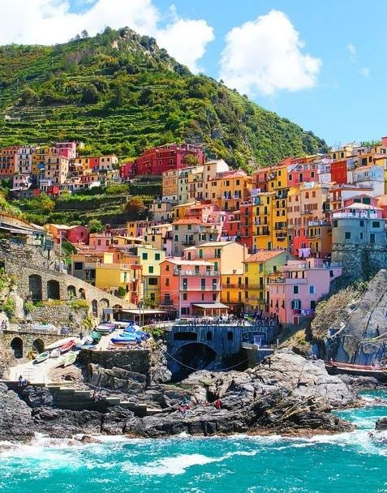
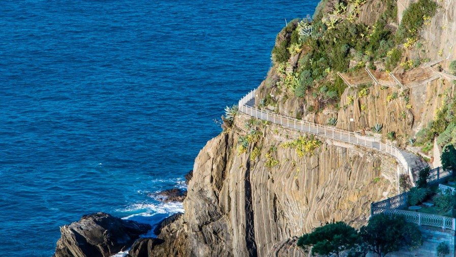

Manarola je najstarije i najuže selo te se najčešće upravo ono nalazi na promotivnim materijalima za Cinque Terre. U prošlosti je poljoprivredno stanovništvo iz okolnih sela dolazilo u Manarolu noseći pšenicu, kestene i slične namirnice kako bi ga u mlinu samljeli u brašno koje je u ono doba bilo jako skupa namirnica. Tako je mjesto dobilo ime, u prijevodu znači „Veliki kotač“.

Manarola
Selo je poznato po svojim špiljama i podvodnim stijenama. Kuće se nalaze dijelom na litici iznad mora, a dijelom uz tok potoka Grapa.

Via dell'Amore
Ulica ljubavi
Posebna atrakcija je šetnica između sela Manarola i Riomaggiore, nazvana Via dell'Amore (Ulica ljubavi). U središtu sela nalazi se crkva Sv. Lovre koji je zaštitnik mjesta.